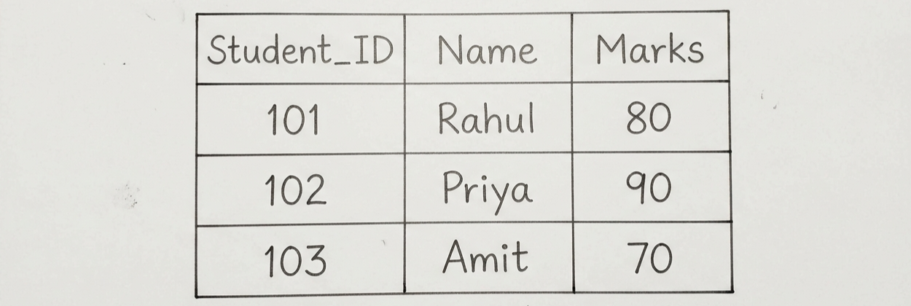
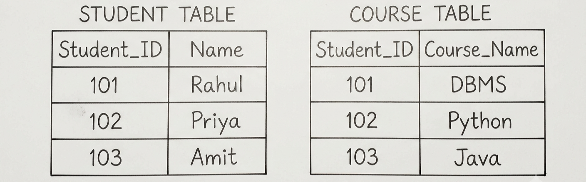
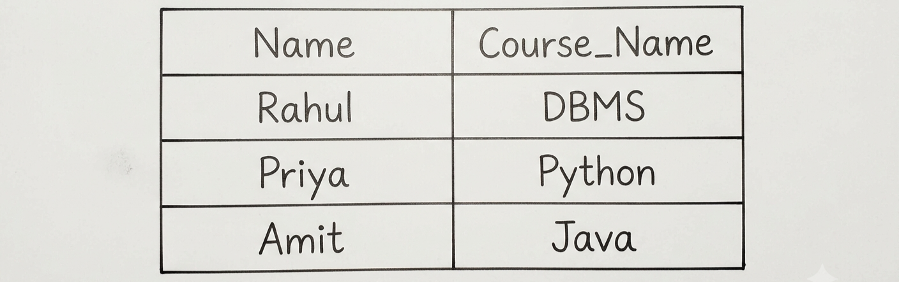

Q17. Discuss Nested Subqueries and Joined Relations in SQL with Appropriate Examples.
1. Nested Subqueries
A Nested Subquery is an SQL query written inside another SQL query. The query inside is called the inner query, and the main query is called the outer query.
First, the inner query finds the required value or data. Then, the outer query uses that result to produce the final answer.
Consider the following STUDENT table:

Example: Find students whose marks are greater than the average marks.
SQL Query:
Here, the inner query calculates the average marks:
Average Marks = (80 + 90 + 70) / 3 = 80
The outer query then compares each student's marks with 80 and displays students having marks greater than 80.
Output:
Types of Nested Subqueries
- Scalar Subquery: Returns only one value.
- Row/Column Subquery: Returns a row or a column of values.
- Table Subquery: Returns multiple rows and columns.
- Correlated Subquery: The inner query uses a value from the outer query. Therefore, the inner query may run again for each record checked by the outer query.
2. Joined Relations
A Joined Relation combines related records from two or more tables using a common attribute.
Consider the following tables:

Here, Student_ID is the common attribute in both tables.
Example: Display the name of each student along with the course name.
SQL Query:
The JOIN compares Student_ID in both tables. When the IDs are the same, the corresponding student name and course name are combined into one result.
Output:

Types of Joined Relations
- Natural Join: Joins two tables automatically using columns having the same name.
- Self Join: A table is joined with itself.
- Multi-table Join: Used to combine related data from more than two tables.